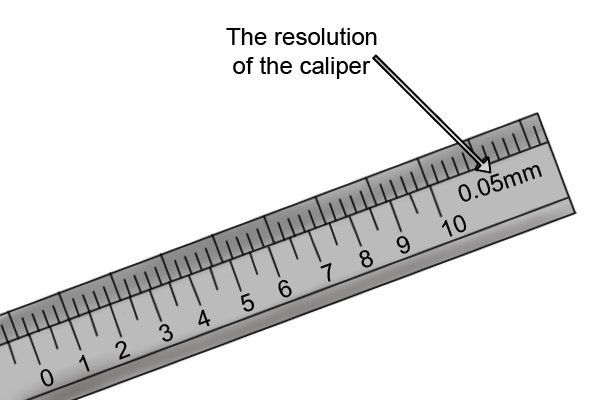

Uncertainty 101
Contents
Uncertainty 101#
Our main goal#
[The science of good measurement]{.smallcaps}
Good == accurate, low uncertainty
Uncertainty#
 {width=”.9\textwidth”}
{width=”.9\textwidth”}
Not this kind of “uncertainty”
 {width=”.9\textwidth”}
{width=”.9\textwidth”}
Measurement uncertainty
Engineers are interested in the uncertainty of measurement simply because we wish to make good quality measurements and to understand the results.
Uncertainty is a quantification of the doubt about the measurement result.
It is important not to confuse the terms ‘error’ and ‘uncertainty’.
Error \(\neq\) uncertainty
Assume a rod of true value of 25 mm and a measured value of 24 mm, here error is 1 mm.
Error is a property of this particular measurement and value.
{width=”\linewidth”}
Uncertainty is a quantification of the doubt about the measurement result
The same rod and the same measured value, but also the measured value depends upon environment factor that makes the doubt of plus or minus 1 mm.
So the true value could be ANYTHING between 23 mm or 25 mm and uncertainty is 1 mm.
Our goal is to [quantify]{.alert} and then to [reduce]{.alert} this [uncertainty]{.alert}
 {width=”\linewidth”}
{width=”\linewidth”}
Let’s repeat: error is not uncertainty
{width=”.9\textwidth”}
https://www.engineering.com/story/an-introduction-to-metrology-and-quality-in-manufacturing
Definitions#
Measurement is: estimate of the size, amount or degree of a desired quantity/parameter by using a set of instruments or devices.
The result is the best estimate with uncertainty, expressed in standard units.
 {width=”.6\textwidth”}
{width=”.6\textwidth”}
based on “Good practice guide no. 131” of The Institute of Mechanical Engineers https://www.npl.co.uk/resources/gpgs
We use only SI#
[International system of units (SI)]{.alert}
The International System of Units has the abbreviation SI (French).
The SI is at the centre of all modern science and technology and is used worldwide to ensure measurements can be standardized everywhere.
There are tremendous benefits to using SI units and countries routinely compare their SI measurement standards.
This keeps measurements made in different countries compatible with one another.
Basic units#
{width=”.8\textwidth”}
Derived units#
{width=”.8\textwidth”}
Measurement science is important#
Aero-engines are built to a very high accuracy and require about 200,000 separate measurements during production and maintenance
 {width=”.8\textwidth”}
{width=”.8\textwidth”}
https://www.af.mil/News/Photos/igphoto/2000589434/
Categories of experiments#
Different categories require different uncertainty approach:
basic science - to learn something new about nature
applied science - to verify a theoretical model
design - to make sure two parts will fit
production - to determine the correct price
regulation - to check that that an item is within specification: pass/fail
In all cases, a measurement is only useful if: a) has high quality, b) if suitable for the intended purpose.
Lord Kelvin said once: 
Measurement is as good as its uncertainty
[measurement = best estimate \(\pm\) uncertainty]{.alert}
We report: what is measured \(L\), its most probable value (2.35), its uncertainty range (0.03) and the best known probability that this true (95%)
If you cannot quantify the measurement uncertainty, [don’t]{.alert} start make the measurement - it is useless
https://blog.beamex.com/calibration-uncertainty-for-dummies-part-1
Uncertainty analysis#
identify all the possible [sources]{.alert} of uncertainty,
evaluate the [standard uncertainty]{.alert} from each source,
[combine]{.alert} the individual standard uncertainties
Some sources of uncertainty
Measuring instrument: they suffer from errors.
Environmental conditions: some measurements are affected by varying in ambient conditions. e.g. calibration of slip gauge depends upon the coefficient of thermal expansion.
The instrument or gauge’ being measured may change over time.
The measurement procedure may be difficult to perform.
Operator’s skill: some calibration procedure requires experience and/or judgment skill.
You should not make any measurements unless you are aware of the related uncertainty.
How to reduce uncertainty?
It is important to reduce uncertainty for an accurate measurement. [Remember:]{.alert} you cannot eliminate uncertainty
Reduce the random effect by repeating the measurement process
Use the most suitable measuring instruments
Use the calibrated instrument for measurement
Apply correction if you know any systematic effect
Record all the uncertainty components
Avoid mistakes by double-checking calculations
Check your measurement by different operator or method.
8 points plan to quantify uncertainty#
{width=”.8\textwidth”}
1. Decide what you need to find out from your measurement#
Identify the type of measurement and how it is to be measured, as well as any calculations* required in the process such as effects that require a correction.
For this example, suppose you decide to use a set of electronic calipers
to measure the length of an object.
{width=”.45\textwidth”}
* direct and indirect measurements in the Lab
2. Carry out and record the measurements needed#
Follow a specified measurement procedure to ensure that your measurement is consistent with standards. Check: the zero reading on your electronic calipers, you know they are well maintained and calibrated, and then you took repeated readings.
{width=”.3\textwidth”}
Notebook should be clear#
a date, name, the instruments, a note of the calibration sticker on the calipers, and a record of the temperature. [This is good practice and pays off by 5% bonus for lab notebooks]{.alert}
{width=”.3\textwidth”}
Outliers and averaging#
Because the numbers are laid out neatly, it makes it easy to spot that Measurement 3 is out of line with the others. Having confirmed with the partners this is a mistake, you can cross it out without making it illegible.
In statistical terms, this reading is considered an outlier and is clearly not part of the natural variability of measurement. It is therefore ignored in any further calculations and you simply take the average of the other 24.
This gives your best estimate of the length as: $\((21.53 + 21.51 + 21.47 + 21.43 +...) / 24 = 21.493\, \mathrm{mm}\)$
3. Evaluate the uncertainty of each input quantity that feeds in to the final result (Type A and Type B evaluations). Express all uncertainties in similar terms (standard uncertainties)#
{width=”.8\textwidth”}
Type A uncertainty
Type A uncertainty evaluations are carried out by statistical methods, usually from repeated measurement readings. In this case, you have 24 readings and have used these to gain an average of 21.493 mm.
3. continued …#
Type B uncertainty evaluations are carried out using any other information such as past experiences, calibration certificates, manufacturers specifications, from calculation, from published information and from common sense. In this example you can consider the calibration of the calipers.
Both of these uncertainties need to be expressed in similar terms so that you can compare and combine them. So you need to associate a number – called a [“standard uncertainty”]{.alert} – with each term.
Type A uncertainty evaluation#
For [Type A]{.alert}: characterize the variability of \(n\) readings by their standard deviation, given by the formula below
This is [standard deviation of a single measurement !]{.alert}
Write it clear in your notebook#
Of course one could glue (white glue, no marking) a print from a Python notebook
{width=”.8\textwidth”}
Type A standard uncertainty of average#
Average (mean) is the random variable by itself.
For \(n\) readings the [standard uncertainty associated with the average]{.alert}:
[standard uncertainty]{.alert} = STD / \(\sqrt{n}\)
The standard uncertainty associated with the average is thus:
Type A standard uncertainty#
This uncertainty is based upon the idea that the readings were drawn from a normal probability distribution. Using 24 readings we estimate the characteristics of this distribution – and then worked out the standard uncertainty – [how well one can estimate the position of the centre of the distribution]{.alert}.
{width=”.45\textwidth”}
Type B uncertainty evaluation#
Type B uncertainty evaluation is needed to assess uncertainties where statistics are not applicable, for example where there are [biases]{.alert} – errors which always affect the reading in the same way.
In order to compare the uncertainty from Type A and Type B evaluation you need to convert the range of the rectangular distribution into a standard deviation to be used as the standard uncertainty.
Typical sources of Type B
{width=”.45\textwidth”}
Calibration - we do not know what how the calibration was performed
Use of different instruments (old/new, different resolutions, etc.)
Different operators, human factor
Environmental factors, external parameters (electromagnetic noise, temperature in the room)
ISO guidelines
ISO guidelines: assume that any error or bias is a random draw from a known statistical distribution.
Then we use the standard deviation from that assumed distribution. Our basic options are:
Uniform, all equally probable within the range, zero probability outside
Triangular, central more probable within the range
‘t’ or “Student”, random, all probable, for small \(n<20\)
Gaussian or normal, random, all probable, \(n>20\)
Probability and distributions
 {width=”.9\textwidth”}
https://www.muelaner.com/uncertainty-of-measurement/
{width=”.9\textwidth”}
https://www.muelaner.com/uncertainty-of-measurement/
Uniform distribution
Most conservative estimate of uncertainty, largest standard deviation
We assume that we know the end points
All the effects within the range are equaly likely
Mean: \(\frac{A+B}{2}\) and standard deviation: \(\sqrt{\frac{(B-A)^{2}}{12}}\)
When we work with \(-a\leq x\leq a\), then we get
Triangular distribution
Less conservative estimate of uncertainty
Smaller standard deviation
We assume the range and take it symmetric for simplicity:
For \(-a\leq x\leq a\):
\[s=\frac{1}{\sqrt{6}}a\]
Back to Type B in our example#
standard uncertainty = half range/\(\sqrt{3}\)
In this example, the calibration certificate simply states that the device will read within \(\pm 0.02\) mm of the correct value, if it is used correctly and the temperature is within the range 0\(^\circ\)C to 40\(^\circ\)C.
The standard uncertainty associated with the calibration of the device is thus $\(0.02 \, \mathrm{mm}/\sqrt{3} = 0.012 \, \mathrm{mm}\)$
Summary of uncertainty types#
{width=”.8\textwidth”}
4. Decide whether the errors of the input quantities are independent of each other#
Could a large error in one input cause a large error in another?
Could an outside influence such as temperature have a similar effect on several aspects of uncertainty at once?
If the errors are independent, which is typical and assumed in this example, you can use the formula in step 6 to calculate combined standard uncertainty. If not, extra calculations are needed, come to the next lecture.
[Assuming that there is no correlation can lead to an unreliable uncertainty evaluation.]{.alert}
5. Calculate the result of your measurement (including any known corrections, such as calibrations)#
You get your result from the mean reading and by making all necessary corrections to it, such as calibration corrections listed on a calibration certificate or manufacturer’s specifications to correct temperature drift, etc.
In this example you do not have any certificate corrections to include. But if you did, they would be added to the original mean reading of 21.493 mm.
6. Find the combined standard uncertainty from all the individual uncertainty contributions#
So in order to evaluate the uncertainty we add the components “in quadrature” (also known as “the root sum of the squares”). The result of this is called the “combined standard uncertainty”.
Type A – from the variability of the data, probability \(p\)
Type B – from the calibration certificate, bias, \(b\)
And our combined uncertainty is …#
The best estimate of the length is the average of the 24 readings. The associated standard uncertainty is evaluated by combining (in quadrature) the standard uncertainties relating to the main factors that could cause the calipers to read incorrectly.
7. Calculate expanded uncertainty for a particular level of confidence#
The combined standard uncertainty is equivalent to [one standard deviation]{.alert}, the \(\mu \pm 1\sigma\) covers about 68% of the normal distribution.
Increase the level of confidence that the true answer lies within a given a range, by multiplying the standard uncertainty by a coverage factor to give an expanded uncertainty:
\[U = k \times u\]Expanded uncertainty: increase the confidence level to 95% or even 99% by combining with the appropriate coverage factor (assuming a normal distribution).
{width=”.8\textwidth”}
8. Write down the measurement result and the uncertainty, and state how you got both of these#
[It is important to express the result in your report so that a reader/boss/user/client can use the information]{.alert}
The main things to mention are:
The measurement result, together with the uncertainty
The statement of the coverage factor and the level of confidence:
\[\ell = 21.49 \pm 0.05 \, \mathrm{mm}\]The reported uncertainty is based on a standard uncertainty multiplied by coverage factor \(k = 2\) , providing a level of confidence of approximately \(95\%\), assuming normality.
An example 1/2
{width=”.9\textwidth”}
https://www.muelaner.com/uncertainty-budget
An example, 2/2 {width=”.9\textwidth”}
Eight steps to get the correct measurement#
{width=”.8\textwidth”}
This is just the simplest case#
This is a simple example, we do not deal with special cases where different rules apply such as:
Small number of repeated readings – “Student” distribution
If one aspect of uncertainty dominates the calculation
If the inputs to the calculation are correlated
Combination of uncertainties
We measured \(N\) physical quantities (variables), \(x_{1},x_{2},\ldots,x_{N}\) (voltage, resistance, power, torque, length), each has its own uncertainty, \(u_{x_{i}}\) (component uncertainty): $\(x_{i}=\overline{x_{i}}+u_{x_{i}}\)$
We want to estimate uncertainty of the result \(R\) that depends on the measured ones: \(y=f(x_{1},x_{2},\ldots,x_{N})\).
We need to estimate \(u_{y}\), using \(u_{x_{i}}\) to obtain: $\(y=\overline{y}\pm u_{y}\)$
Two types: [maximum]{.alert} (worst case) or [expected]{.alert} (probabilistic)
Theory of uncertainty analysis Taylor expansion
Maximum uncertainty
We assume that all the errors in the component measurements will ADD to the uncertainty of \(R\), i.e. will be always of the same sign.
This is worst case scenario, unlikely for large number of variables (large \(N\)), but happens when we have a direct effect or a bias error (broken ruler, wrong diameter of spheres in cone measurements, lab A)
Expected uncertainty
Root of the sum of squared uncertainty, RSS:
More realistic for large number of variables or for very different variables (using different instruments, randomization)
ISO standard if not stated otherwise: \(u_{R}=u_{R,\textrm{RSS}}\)
We known that \(R=\overline{R}+u_{R}\) at the same confidence level as the components, typically 95% confidence level
Use dimensionless \(u_{R}/R\)
Detailed example Measure volume flow rate, \(Q\) using the “bucket” method, measure the time it takes to fill some volume \(\forall\)$\(Q=\forall/t\)$
Measured: \(\forall=1.15\pm0.05\) liter, \(t=33.0\pm0.1\) sec, both with 95% confidence
\(Q=\forall/t=1.15/33.0\left(60\,\textrm{s}/\textrm{min}\right)=2.0909\Rightarrow2.09\) liter/min (lpm) (note 3 sig. dig.)
Partial derivatives: \(\partial Q/\partial\forall=1/t\), \(\partial Q/\partial t=-\forall/t^{2}\)
\(R=Q\), \(u_{\forall}=0.05\) liter, \(u_{t}=0.1\) sec.
The maximum, worst case method
The expectation method#
The full and correct answer is \(Q=2.09\pm 0.0911\) lpm (with 95% confidence)
What do we learn from the analysis ?
The contribution of each variable to the overall uncertainty:
\(u_{\forall}/\forall=0.05/1.15=4.35\%\)
\(u_{t}/t=0.1/33.0=0.303\%\)
\(u_{Q}/Q=0.0911/2.09=4.35\%\)
If we want to improve the result, which measurement shall we improve first?
Continued …
For instance, improving the time accuracy and reducing it uncertainty by the factor of two will not affect the result at all.
Instead, improving volume by the factor of two \(\forall=1.150+0.025\) liters will cause \(Q=2.09\pm0.046\) lpm - significant improvement.
Last example, how to save money for your startup
Shaft rotation speed measured by stroboscope with many repetitions. \(\overline{N}=1734.2\) rpm, \(S_{N}=1.45\) rpm.
Strobe accuracy by manufacturer \(\pm 1.00\) rpm
\(u_{\textrm{measurement}}=\pm 2\sigma=\pm 2.90\) rpm (95%) \(u_{\textrm{instrument}}=\pm1.00\) rpm
\(u_{N}=\sqrt{u_{\textrm{meas.}}^{2}+u_{\textrm{instr.}}^{2}}=\sqrt{2.90^{2}+1.00^{2}}=3.068\) rpm
The final result is: $\(N=1734.2\pm3.07\,\textrm{rpm} (95\% \mathrm{c.l.})\)$
The uncertainty is due to the measurement uncertainty, thus a more expensive tool will not help.